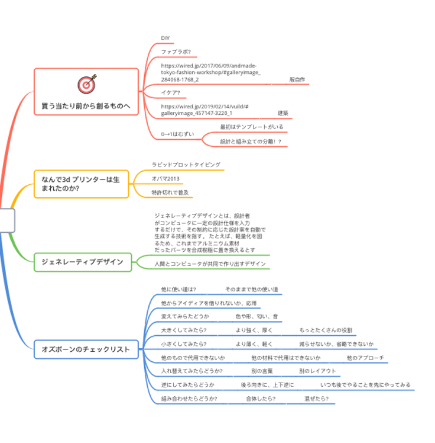

コロナにより学校が立入禁止になり、ファブラボが使えません。
また個人的に帰国できない状況により、パソコンが使えないため、作業を進めることがさらに困難でした。スマホでは難しい部分です。
そのため、卒論を進めようと考えました。
全体の構成を考えました
1. 研究の背景と目的
1-1デジタルファブリケーションによる服のイノベーション（研究背景）
1-2本論文の目的
1-3本論文の構成
2. レーザカッターによる服のイノベーション
2-1レーザーカッターとは？
2-2服作りとレーザーカッター の相性
2-3実例
2-4考察
2-5まとめ
3. 3dプリンターによる服のイノベーション
3-13dプリンターとは
3-23dプリンターと服作りの相性
3-3素材による可能性
3-4構造による可能性
3-5実例
3-6考察
3-7まとめ
4. デジタルファブリケーションがもたらす革命（各所のまとめと結論）
4-1レーザーカッター によるイノベーション
4-2 3dプリンターによるイノベーション
4-3 ファブラボと服作りとイノベーション
4-5結論
参考文献
・卒論を実際に書いてみる
・参考文献を集める
・卒論を実際に書いてみる
別ファイル
・参考文献を集める
別ファイル
→上記の内容は白紙に戻し、
少し方向修正をして、既存の服と3dプリンターの融合について考えていきたい。
安い既製品の中では、工場規格で作られている服が増え、違うお店行っても、似た色と似たデザインのものが売っていたりします。
そこで差別化を図るのに3dプリンターはやくにたてるのではないか。
今週は卒論を1000文字分進めるのが目標！→1500字以上かけたが、いまいちまとまっていない。
研究の軸が決めれてないから、あれもこれも足している気がする。だからまとまりにくのではないか。序論より先に本論を書いた方がまとまるのだろうか。
○3Dプリンターの実用性に関する課題
本論文では、デジタルファブリーケションの実用性について、問題点を洗い出し、改善策を見つけていきたい。また、新しいデジタルファブリーケションの活用法として、既製品との融合に挑戦していきたい。本論文では主に服作りとデジタルファブリーケションの可能性を探っていきたい。
現在自動車業界をはじめとする一部の企業では、3Dプリンターなどの立体印刷機を製品作りの現場で使うようになってきた。試作だけではなく、印刷した部品が実際の製品に使われることも増えた(1)。また、高価なイメージがある3Dプリンターですが、近年は1万円のモデルのものも発売されており、誰もが手に入りやすいものになってきた(2)。一方で、3Dプリンターが普及しても、試作を作るイメージの方が強いのではないだろうか。実際に使うには、強度の問題や品質の差が出やすかったりなどのデメリットがまだ目立っており、実用化の普及には至ってないのが現状である。
デジタルファブリケーション機器の登場により、産業では様々なイノベーションがもたらされた。個人レベルでオーダーメイドなものを作れることが可能になってきたのである。またデータの共有により、世界中のどこでも、すぐに大量生産することも可能になった。
従来は大量生産を同じ規格でおこない、安い人件費のところで作って、それを輸送して、安く消費者に届ける生産ラインが主流で、ユニクロやZARAなどのファーストファッション(3)のような形で消費者に届くようになった。服作りの大量生産は近年の産業革命により可能になった。誰もが安くてある程度の、品質があるものが手に入るようになった。一方で、輸送の際の二酸化炭素問題や大量消費によるゴミ問題の増加など、様々な環境問題の原因にもなっている。そこで、今後は近場のオーダーメイドが主流になるのでないだろうか。
デジタルファブリーケションが普及し始めてから、技術の進歩は日々行われている。新しい素材や機材の開発が進むにつれて、デジタルファブリーケションが貢献できる分野がさらに広がるのではないだろうか。本論文では、デジタルファブリーケションの現状と服作りの現状についてみていき、今後の新しい消費の流れについて考察していく。
[1]車の工場の例を後で調べる
[2]3Dプリンターの普及と価格についての資料を後で調べる
[3]ファーストファッションちゃんと調べる
○先行研究
○本論文の目的
本論文では、環境問題をはじめとする、様々な問題の解決法として、製品作りにデジタルファブリーケションを取り入れる利点と欠点について研究している。現段階では、デジタルファブリーケションは個人の利用の方が多い。（4）デジタルファブリーケションの登場により、個人が作れるものの幅が大きく増え、低価格化にも影響した。その実績を応用し、大規模な生産ラインの中で活躍できるのではないだろうか。デジタルファブリーケションの特徴として、データの微調整がしやすいことから、オーダーメイド品を作る際にも役に立つ。オーダーメイドとまではいかなくとも微調整してマスカスタマイゼーション（5）の製品作りが可能になるのではないだろうか。個人差が大きいものといえば、服ではないだろうか。標準規格(6)は存在するが、自分に合うとは限らない。同じMサイズでも着れるものと短かったり、きつかったりしてきれないものがある。またフリーサイズの服が増えたが、みんなが着れるからフリーではなく、大体は平均的なMサイズである。またインターネット通販の普及による服の購入のトラブルの中で、実際に来てみないと合うかわからないというものがある。そこで、オーダーメイドの服が作れるようになってきたら、自分なサイズを測っておき、入力してデータ化する。そしてそのあとそのサイズで注文してみる。そこから、実物を作り始める。そしたら、欲しい人にはちゃんとした着やすいサイズで届き、製品のロスが減るのではないか。この仕組みで活躍するのがデジタルファブリーケションではないだろうか。
[4]個人利用が多い調査
[5]マスカスタゼーションここで使うべきか検討する
[6]ジャスコ？標準規格、服の？調べる
論文について考察中

そもそもなぜ3d プリンターが生まれたのか。それはラピッドプロットタイピングを作るため。
試作を素早く作れる。近年になって普及したのは特許が切れて安価な製品も作れるようになってきたのである。
・見つけた論文一覧（未整理）
○気温に左右されずにファッションを楽しむためのデザイン提案（2019）here
○自動車産業における3Dプリンタ活用の現状と展望（2017）here
○繊維リサイクルの観点による“つくる責任、つかう責任”（2019）here
○特集：「価値共創とマーケティング」ファッション産業における価値共創（2017）here
・個人的な意見・考察
3d プリンターに関する論文は主に2013年から2014年のものが多い。
2016年の白書にも言及されたことある
2013年にオバマ元大統領が発言している
本も発行年数が2013年が多く、技術や作り方を覚えるための本は2016年発行もある。
3Dプリンターを使うには二つの技術の習得が必要である。プリンター自体の扱いや材料の扱い、加工の仕方を覚えること。もう一つは3次元のデータを設計しなければならないこと。
2019年本の発行のものが少ないので、3d プリンターのブームはひと波過ぎ去ったような感覚を感じる。
一方で、近年は金属や食品など加工できる素材の幅が広がっているのではないか。
また感温フィラメントやTPUなどの柔軟性も表現可能になってきた。
また建築や医療、衣服、製造の現場まで使用領域が広がっている。
またジェネレーティブデザインなどの新しい設計技術の進歩もめまぐるしい
進化はしている。
だがまだ扱える人が少ないように感じる。学習をするのにハードルがあるのではないか。
近年はプログミングの義務教育化も行われていることから、近いうち、3次元の設計者が増えるのではないだろうか。
帰国した。（4回目）

卒論の骨組みを作った。
論文、本を読み始めたので、後日GITにまとめたい
FUSION360で歯車を作れました！嬉しかったので記録しておきます。
やり方はこの動画より学びました→YOUTUBE
動画をこのように表示するには、Youtubeの動画のページに“共有”ボタンがあるので、その中の埋め込みをコピーして、Bracketsにペーストすれば簡単にできます。